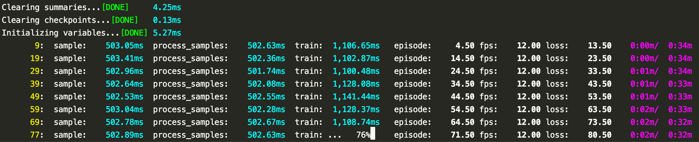

lab_getting_started.py
Lab 🧪
This library lets you organize TensorFlow machine learning projects.
It is based on a bunch of utility functions and classes I wrote while trying some machine learning algorithms. I recently made it to a separate repo because I’ve been reusing them on different projects, and it was easier to keep track of them as a single project. Most of this is only about two weeks old so it’ll have to go through a lot of improvements.
What does it do?
- It keeps checkpoints and TensorBoard summaries and logs organized
- It helps keep track of experiments were with reference to git commits
- Produce pretty console outputs
- Maintains and writes histograms and moving averages
- Monitor time taken for different sections of code
- Estimate time remaining for experiments to run
- Help make code more readable
Why I made it?
I started coding existing reinforcement learning algorithms to play Atari games for fun. It was not easy to keep track of things when I started trying variations, fixing bugs etc. This library help organize your experiments. It organizes the folders of the checkpoints, logs and TensorBoard summaries by each experiment. It also keeps track of the git commits when each experiment was run, so if some other change in code, affected the results of a experiment you can easily track what caused it.
I also wrote a logger to display pretty results on screen and to make it easy to write TensorBoard summaries. It also keeps track of training times which makes it easy to spot what’s taking up most resources. Here’s the output of this sample program (sample.py):

Here’s how to use it
Time module is used to sleep so that you can see how this sample works when you run it.
import time
import tensorflow as tf
from lab.experiment import ExperimentYou should keep the project level lab details defined in a python file at the top of the project. Here’s the example lab_globals.py used for this sample.
from lab_globals import labCreate the sample experiment
EXPERIMENT = Experiment(lab=lab,
name="Sample",
run_file=__file__,
comment="Sample lab experiment",
check_repo_dirty=False)Get a reference to logger
logger = EXPERIMENT.loggerThis is sample monitored section. I use monitored sections to keep track of what’s going on from the console output. It is also useful to organize the code into sections, when separating them into functions is difficult
with logger.monitor("Create model") as m:Indicate that this section failed. You don’t have to set this if it is successful.
m.is_successful = FalseSleep for a minute.
time.sleep(1)Print sample info
logger.info(one=1,
two=2,
string="string")Set logger indicators
Episode is a queue; this is useful when you want to track the moving average of something.
logger.add_indicator("episode", queue_limit=10)By default everything is a set of values and will create a TensorBoard histogram
We specify that fps is a scalar.
If you store multiple values for this it will output the mean.
logger.add_indicator("fps", is_histogram=False)This will produce a histogram
logger.add_indicator("loss")Create a TensorFlow session
with tf.Session() as session:Start the experiment from scratch, without loading from a
saved checkpoint.
This will clear all the old checkpoints and summaries for this
experiment.
If you start with the continued non-zero global_step
the experiment will load from the last saved checkpoint.
EXPERIMENT.start(0, session)Create monitored iterator
monitor = logger.iterator(range(1000))This is the main training loop of this project.
for global_step in monitor:Print the step
logger.print_global_step(global_step)A sample monitored section inside iterator
with monitor.section("sample"):
time.sleep(0.5)An unmonitored section is used only to organize code. It produces no output
with monitor.unmonitored("logging"):Store a dictionary
logger.store(
episode=global_step,
fps=12
)Store a collection of values
for i in range(global_step, global_step + 10):
logger.store(loss=i)Another monitored section
with monitor.section("process_samples"):
time.sleep(0.5)A third monitored section to make it real
with monitor.section("train"):Let it run for multiple iterations. We’ll track the progress of that too
iterations = 100
progress = logger.progress(iterations)
for i in range(100):
time.sleep(0.01)Progress is tracked manually unlike in the top level iterator The progress updates do not have to be sequential.
progress.update(i)Clears the progress when complete
progress.clear()Log stored values. This will output to the console and write TensorBoard summaries.
logger.write(global_step=global_step, new_line=False)Show iterator progress. This will display how much time is remaining.
monitor.progress()We will overwrite the same console line, and produce a new line after ten such overwrites. This helps keep the console output concise.
logger.clear_line(reset=(global_step + 1) % 10 != 0)What’s next? 🤔
There are some other tools built around this that I need to cleanup and include.
TensorBoard invoker
This lets you start TensorBoard without having to type in all the log paths. For instance, so that you can start it with
tb ppo ppo_transformed_bellman
instead of
tensorboard --log_dir=ppo:project_path/logs/ppo,ppo_transformed_bellman:project_path/logs/ppo_transformed_bellman
Custom analysis of TensorBoard summaries
TensorBoard is nice, but sometimes you need custom charts to debug algorithms. Following is an example of a custom chart:

And sometime TensorBoard is not even doing a good job; for instance lets say you have a histogram, with 90% of data points between 1 and 2 whilst there are a few outliers at 1000 - you won’t be able to see the distribution between 1 and 2 because the graph is scaled to 1000.
I think TensorBoard will develop itself to handle these. And the main reason behind these tooling I’ve written is for custom charts, and because it’s not that hard to do it.
@vpj on Twitter
Please find me on twitter if you have any criticism or suggestions.